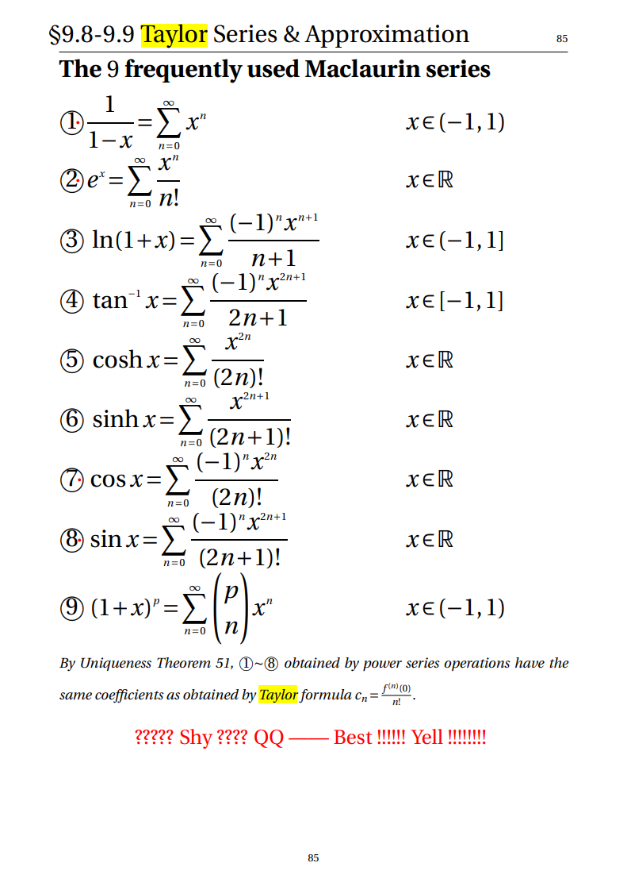

Chapter 11 立体几何与空间向量
11.1 立体直角坐标系


11.2 向量
- Concepts
-
从低维到高维
-
几何意义
-
向量的分量

- 向量加法
- 向量数乘
- 向量减法
- 线性性质：
加法：交换律、结合律
数乘：交换律、结合律、分配律
- 向量长度
11.3 点积（数量积）
a. 定义 ∑uivi: 标量
b. 几何意义:一个 向量的长度 乘以另一个向量 投影的长度
- 向量夹角

若u、v都不是零向量，其夹角为(u,v)=θ，则cosθ=∥u∥∥v∥u⋅v。
例:向量与坐标轴的夹角
-
方向角与方向余弦
投影

-
点积的性质
交换律，数乘结合律，分配律
-
正交
11.4 叉积(向量积)
- 行列式
S=u×v=iu1v1ju2v2ku3v3=u2v2u3v3i−u1v1u3v3j+u1v1u2v2k
- 几何意义
有向面积

- 性质
反交换律 分配律数乘结合律u×v=−v×uu×(v+w)=u×v+u×wλ(u×v)=(λu)×v=u×(λv)
混合积
(u×v)⋅w
(u×v)⋅w=u⋅(v×w)
u×(v×w)=(u⋅w)v−(u⋅v)w
11.5 向量值函数
-
用方程表示平面
截距式、点法式、一般式

-
平面的夹角

-
点到平面的距离
复习：点到直线的距离
-
直线方程
参数方程⇒向量方程（向量形式）
对称方程
-
直线间的夹角
-
直线与平面的夹角
-
曲线
点系⇒曲线
参数方程⇒向量方程
F(t)=f(t)i+g(t)j+h(t)k=<f(t)i,g(t)j,h(t)k>
- 曲线的微分：
- 求导：几何意义(一次、二次)
- F′(t)=f′(t)i+g′(t)j+h′(t)k=<f′(t)i,g′(t)j,h′(t)k>
- 性质：
- Dt[F(t)×G(t)]=F(t)×G′(t)+F′(t)×G(t)
对于曲线:l:F(t)=f(t)i+g(t)j+h(t)k
L=∫ab(dtdx)2+(dtdy)2+(dtdz)2dt
=∫ab1+(dxdy)2+(dxdz)2dx

- 曲面
柱面 cylindrical surface
二次曲面 quadric surface
例：如何画空间曲面草图? (固定一个变量)
4x2+4y2−z2=4 方程
z=f(x,y)=x2+y2 函数
z=f(x,y)=x2+2y2 函数

11.9 柱面坐标系和球面坐标系
(x,y,z)⇒(ρ,θ,z) or (ρ,θ,ϕ)

例题
-
求两个平面的交线
-
求异面直线距离

-
求异面直线最近的两点距离
-
给三个点，求出平面方程
（↓这题不讲了）

-
找一个向量在另一个向量上的投影
The vector projection of u=i+j−k on v=j+2k is
−51j−52k
-
Given the curve C:r(t)=(etcosπt)i+(etsinπt)j+etk
Show that the curve C lies on a quadric surface and find the equation of the surface.

-
求曲面被切的边缘
Let C be the curve of intersection of the paraboloid z=4−2x2−y2
and plane 2x−y=2
解方程游戏

Chapter 12二元变量函数
主线：找切平面
12.1 二元变量函数
单变量函数⇒双变量函数
12.2 微分(偏导数)


高阶的偏导数
混合的偏导数
求二元函数的切平面
法一：


n=ex×ey=e110e201e3fx(x0,y0)fy(x0,y0)=−fx(x0,y0)e1−fy(x0,y0)e2+e3
法二：高维函数的等势面(线)
二元函数：等值线
三元函数：等值面

##12.3 二元函数的极限
- 求极限
例：判断极限存在？求极限。
(x,y)→(0,0)limx2−y2x2+y2 ?
(x,y)→(0,0)limx2+y2xy ?
计算方法：换元
- 判断连续：
- 整式多项式是连续的
- 复合规则：连续的复合连续的依然是连续的
12.4 二元函数的微分
- 全微分(切平面、线性近似)
f(a+Δa,b+Δb)=f(a,b)+Δafx(a,b)+Δbfy(a,b)+ϵ
f(x,y)=f(x0,y0)+(x−x0)fx(x0,y0)+(y−y0)fy(x0,y0)+ϵ ⇒ 平面方程
12.5 梯度和方向导数
-
方向导数
u:单位向量
几何意义
-
梯度
- 定义：一个向量，其方向上的坡度是最大的
- 几何意义
指向山峰吗？

-
方向导数和梯度的关系：
梯度方向的方向导数最大，Duf(p)=u⋅∇f(p)
Textbook p649
12.6 链式法则（解题法）
例：w=x2y+y+xz, where x=cosθ,y=sinθ,z=θ2
Find dθdw
经验技术：隐函数求导
Implicit: F(x,y,z)=0
∂x∂z=−FzFx
12.7 切平面
12.8 找面上的最大值最小值
- Critical points有以下几种:
- Boundary
- Stationary point: 两个偏导数(或任意两个方向导数)都是0
- Singular point：尖尖
-
对于stationary points。海森矩阵:二次检验 stationary point
- 雅可比矩阵

- 海森矩阵
H=∂(x,y)2∂2z=(fxxfyxfxyfyy)
看两个：
二、fxx或fyy的正负
fxx<0 ，该点是极小值
fxx>0 ，该点是极大值
一、det(H)的正负
det(H)>0，该点是极值
det(H)<0，该点不是极值(图三)

例：函数f(x,y)=4(x−y)−x2−y2的极值情况?
Ans:有一个极大值，值为8
-
拉格朗日乘子法；检验 Boundary
即，在约束条件下求极值
例：求 z=f(x,y)=x2+y2
在 g(x,y)=x2y=3 约束下的最小值


在切点处，梯度的方向一致
（复习：梯度是一个方向，可以看作是地上的一个向量）
⎩⎨⎧f(x,y)=x2+y2g(x,y)=x2y∇f=λ∇gx2y=3⟹⎩⎨⎧(2x2y)=λ(2xyx2)x2y=3
例：内接于半径为a的球的长方体，体积最大为？
例题
-
求偏导
-
z=x+yx−y, find ∂x∂z,∂y∂z,∂y∂x∂2z
-
z=xyarcsinyx, find x∂x∂z+y∂y∂z. Ans=0
复习一下三角函数求导
sin(x)′,cos(x)′,tan(x)′,csc(x)′,sec(x)′,cot(x)′
arcsin(x)′,arccos(x)′,arctan(x)′,arccsc(x)′,arcsec(x)′,arccot(x)′
cos(x),−sin(x),sec2(x),−cot(x)csc(x),tan(x)sec(x),−csc2(x)
1−x21,1−x2−1,1+x21,∣x∣1−x21,∣x∣1−x2−1,1+x2−1
-
Implicit: z(x,y)is defined as xyz=lnyz. Find ∂x∂z,∂y∂z
-
求极限
-

-
求方向导数和梯度
-
Given two points A(3,0) and B(1,3) . Find the directional derivative of the function f(x,y)=xexy at the point A in the direction of the vectorAB
-
Let u=3i−4j, v=4i+3j. Suppose that at point P(x0,y0),Duf(x0,y0)=−6, Dvf(x0,y0)=17. Find ∇f(x0,y0). (Ans:⟨10,15⟩)
-
The unit vector in the direction in which f(x,y,z)=x2+2y2−3z2 increases most rapidly at P(1,1,1)
-
全微分
-
Find the tangent planes of the surface x2+2y2+3z2=21 that are parallel to the plane x+4y+6z=0
ps：只能求出比例，需再解
-
Find all points (x,y)at which the tangent plane to the graph z=x2+10x−2y2+4y+2xy Ans:(-4,-1)
-
求极值和最值
-
Find the local maximum value and local minimum value of f(x,y)=xy+x2+y4

-
Find the global maximum value and global mimimum value of f(x,y)=x2−y2+2 on the closed and bounded set S={(x,y):x2+41y2≤1}
Not this time
∑n2−11
∑[(c−n+1c)2−(c−nc)2]
